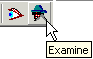
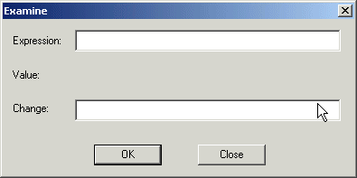
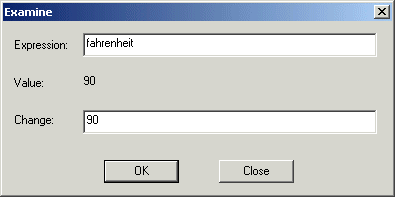

Examining and Modifying Variables
When a program is executing but the IDE has control--at a breakpoint or after a step--you can examine the values in variables that are in scope and modify their contents.
Examine a Variable
- Click the Examine tool button.

- Or press Ctrl+E.
- Or choose the Examine command on the Debug menu.
Any of these actions opens the Examine dialog shown here.

- Type the name of a variable that is currently in scope into the Variable field.
You can enter any C/C++ expression that can be evaluated in the current scope of the program. If an expression has side effects, they come into play as soon as the examine is evaluated when you click OK. you
- Click OK. The dialog box displays the type and current value of the variable. If the variable is not in scope, the dialog displays the ?? token.
Modify the Variable's Value
- Tab to the Change field.
- Enter a new value from the keyboard.
(You can change the value only if the expression you entered is a C/C++ lvalue in the current scope of the program.)
- Click OK.
The new value is displayed, and when you continue running the program, the variable has the new value stored in it.

To close the Examine window and return to the IDE, click Close.
<--previous page
next page-->